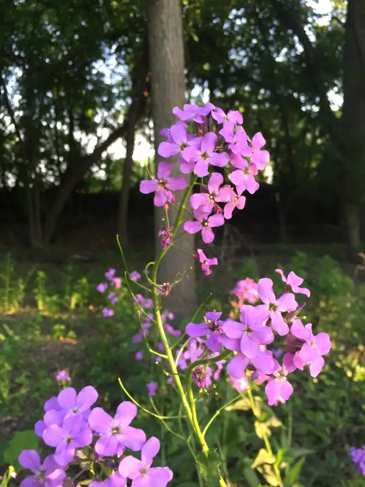
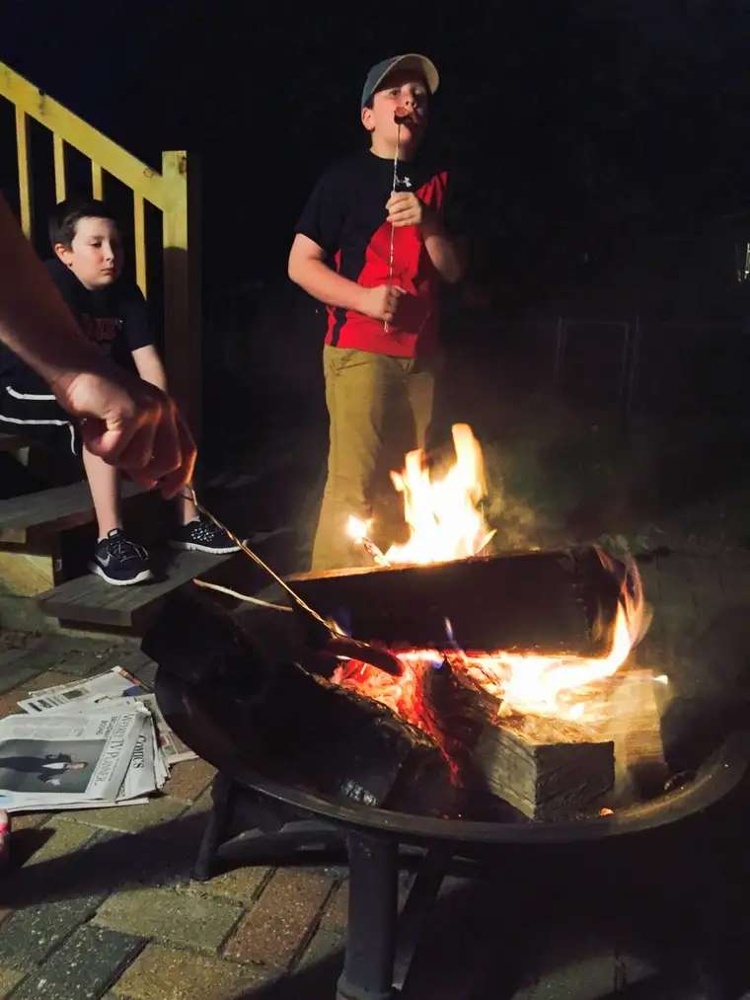
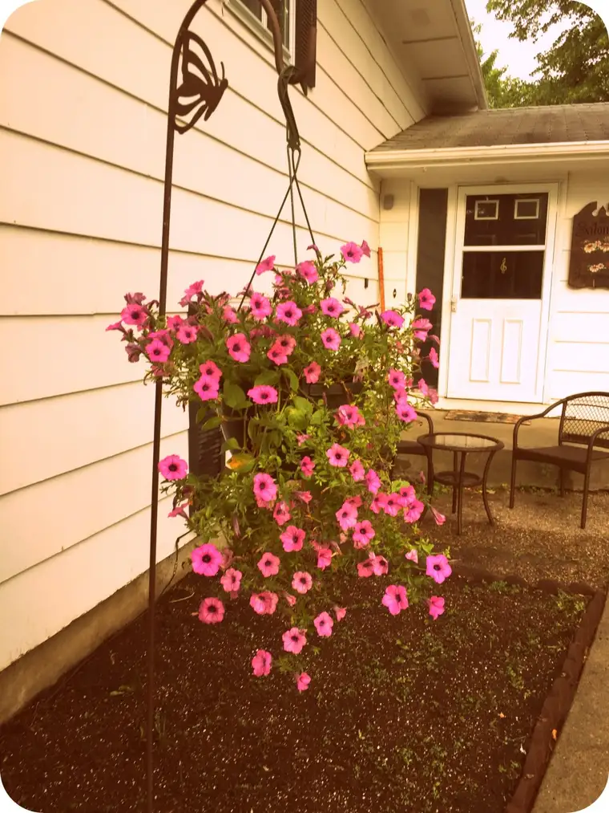
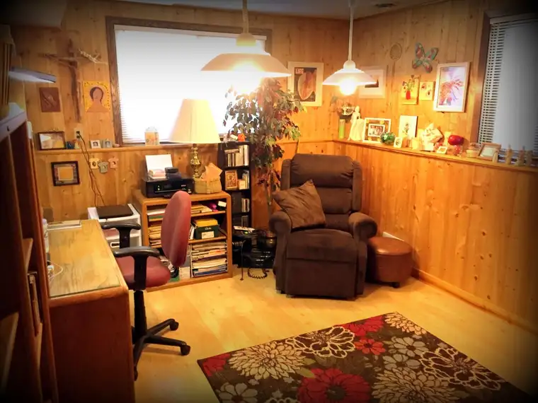
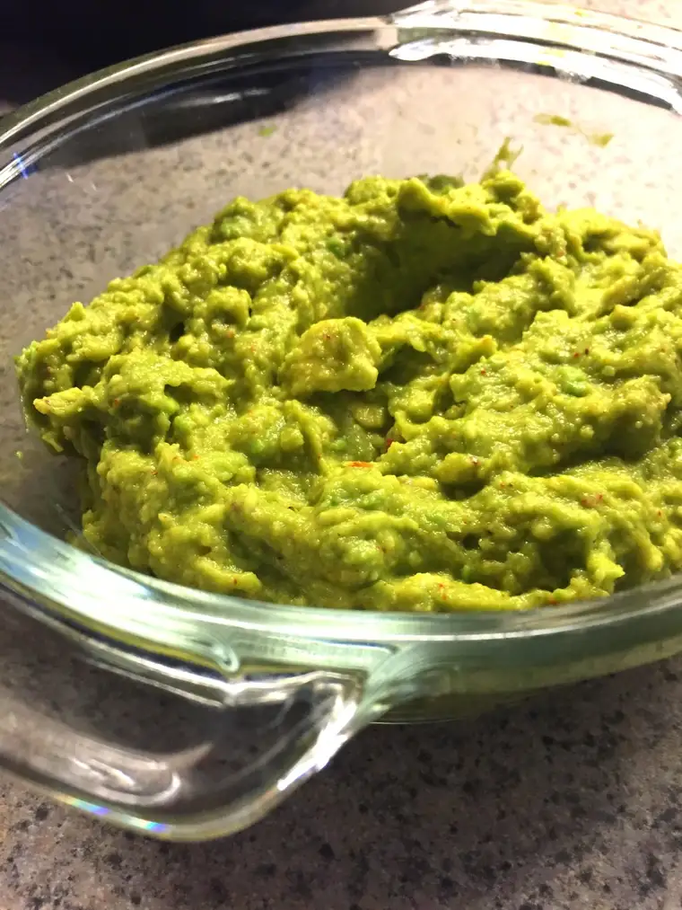
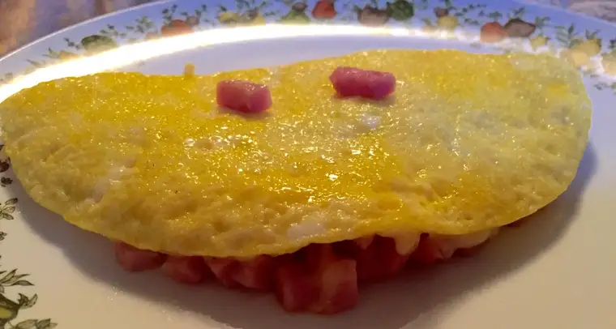

With our May so jam-packed, and several fairly involved obligations on the calendar in June, I purposefully avoided doing much about July the months before its arrival. I decided July would be uneventful. It would be the exhale month.
But when the calendar turned, and I realized a good portion of my friends were gone to the lakes or on their vacations to somewhere wonderful, a bit of desolation and dread set in.
It wasn’t so much that I was missing out on all these wonderful things — I celebrate the social media updates of friends and am truly happy they are able to indulge — but it just dawned on me that it seems criminal in a way — to have this middle of the summer month in North Dakota with nothing planned. We get just a few short months here to enjoy decent weather, after all. Isn’t it wrong to waste it?
But soon, I began to realize how silly these thoughts were. Who was I kidding? I love the simple pleasures of summer, right here in my own backyard. Thinking I should be somewhere else is only a momentary longing. If I’m honest with myself, I find I’m really not unhappy keeping things easy and free.
It’s true, we don’t have a lake home to escape to like so many in our area. And though I’m sure I’d absolutely love it if we did, it’s nice not having a second place to tend to, not having a plan that takes lots of running about, not having to go very far to appreciate what’s good right here.
In assessing our situation, I’ve realized that some of my favorite parts of past summers have been hanging around home with my family near, and not a whole lot to get to. A simplified calendar. And simple pleasures, right where we are.
Like, walks just before dusk, with a friend, a son or daughter, a husband…on a pretty path…

Or over a busy highway.

Or…heading out to the back patio with some tinder and kindling and matches, a few logs, roasting sticks, hot dogs, marshmallows, and…

Or maybe starting a small project — trying to grow a little flower garden for the first time in many years. Will the garden grow? It means sticking around to watch, water and wait.

Or having time to finally move into the new office, finally finding a place for things that had been displaced in a box somewhere…

Making sure there’s a candy jar, because then, the visitors won’t stop. Even if they’re just visitors from within your own home.

Discovering the joy of reading again…even if it means getting used to those reading glasses that have suddenly become a part of the routine.
Trying a new recipe — guacamole for the first time!

Or tasting a new recipe created by the son whose growling stomach finally drove him to the fridge with a mission.

There is something about just sticking around home, feeling the calming affect of just being in one’s own digs, and basking in the summer weather for bits, right here, right now.
Life has become so complicated and frenzied. I’m rather enjoying these simple pleasures right now.
“And I learned what is obvious to a child. That life is simply a collection of little lives, each lived one day at a time. That each day should be spent finding beauty in flowers and poetry and talking to animals. That a day spent with dreaming and sunsets and refreshing breezes cannot be bettered. But most of all, I learned that life is about sitting on benches next to ancient creeks with my hand on her knee and sometimes, on good days, for falling in love.” – Nicholas Sparks
Q4U: What is your favorite simple summer pleasure?